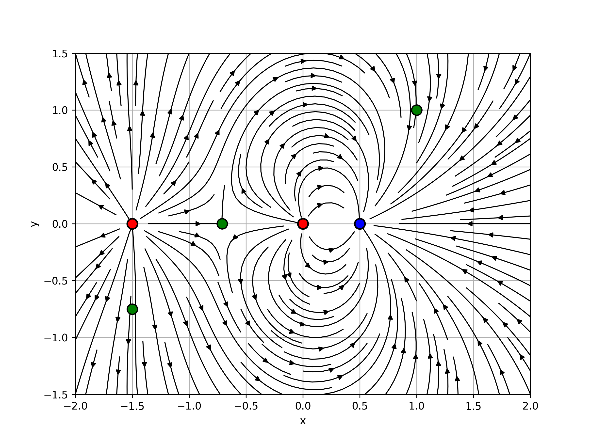
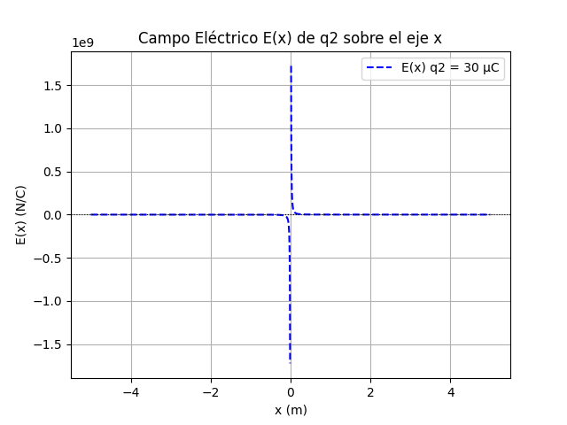
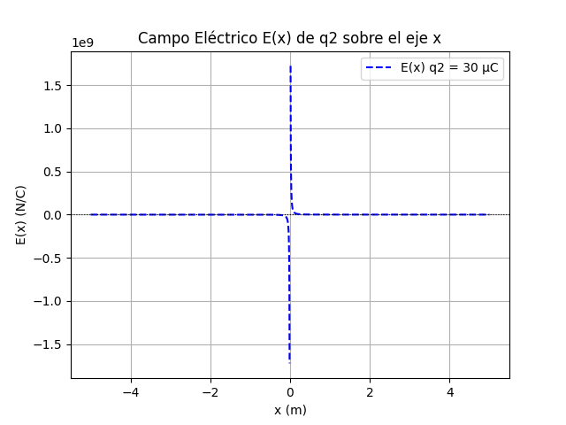

Para analizar el comportamiento del campo eléctrico generado por la configuración de cargas, calculamos numéricamente, con la formula,
los valores para tres puntos del plano xy el campo eléctrico E(x,y):
- E1: E( -0.71 , 0 )=
- E2: E( 2 , 2 )=
- E3: E( -1.5 , -0.75)=
De los resultados obtenidos, se observa que en el punto E1 el campo eléctrico es cercano a cero, debido a que los campos generados por las dos cargas positivas se cancelan parcialmente.
En E2 el campo eléctrico presenta un valor elevado, con un componente en y claramente dominante y negativo, y un componente en x también negativo pero de menor magnitud. Esto sugiere que una carga de prueba positiva ubicada en dicha posición sería empujada principalmente hacia abajo y levemente hacia la izquierda, reflejando la influencia predominante de la carga negativa más cercana. Esta configuración puede visualizarse claramente en el gráfico de líneas de campo.
En E3, el componente en x es prácticamente nulo, mientras que el componente en y presenta un valor significativo, lo que refleja la interacción predominante con la carga positiva.
Para cambiar de lugar a E1, E2 y E3 pueden editarlos manualmente en main.py, línea 36.
Líneas de Campo Eléctrico
En el gráfico “Campo Eléctrico E(x) sobre eje x”, que representa el campo eléctrico total a lo largo del eje x, se observa que resulta de la suma de los campos generados por cada carga individual, representados en los gráficos “Campo Eléctrico E(x) de q1”, “de q2” y “de q3”. . Esta superposición refleja cómo las contribuciones individuales se combinan para formar el campo total, tal como se aprecia en la forma final del gráfico.
{kind=link}
 



En el gráfico “E(x) con puntos de equilibrio” se observa un punto de equilibrio en x=0,71, es donde el efecto de las dos cargas positivas se cancela y el campo es cero. Si bien solo se muestra ese punto, sabemos que existe otro en el infinito, donde el campo también se anula debido al predominio de la carga neta positiva del sistema. No fue posible representarlo por las limitaciones del gráfico. Las discontinuidades cerca de las cargas muestran cómo el campo crece mucho en esos puntos, lo que es típico en cargas puntuales.

Puntos de equilibrio
-
{% for punto in puntos %}
- {{ punto }} {% endfor %}
Las líneas equipotenciales muestran los puntos del espacio que tienen el mismo potencial eléctrico. Si se coloca una carga de prueba en cualquier punto sobre una línea equipotencial, no realizará trabajo eléctrico al moverse por esa línea, ya que su energía potencial no cambia. Estas líneas siempre son perpendiculares a las líneas del campo eléctrico, lo cual podemos observar si lo comparamos con el gráfico anterior:
Líneas Equipotenciales

Por otro lado, el gráfico del potencial eléctrico muestra una transición continua, como se espera, con un mínimo definido por el signo de las cargas q1 y q2. Vemos en particular que en el punto de equilibrio del campo eléctrico se haya el mínimo de potencial eléctrico, relación que evidencia la fórmula E= −∇V, donde se establece que el campo eléctrico apunta en la dirección donde el potencial disminuye más rápidamente, y en este caso al ser 0 el campo, el cambio de V (su pendiente) será 0 y por lo tanto habrá un mínimo en dicho punto.
Gráfico de V(x)